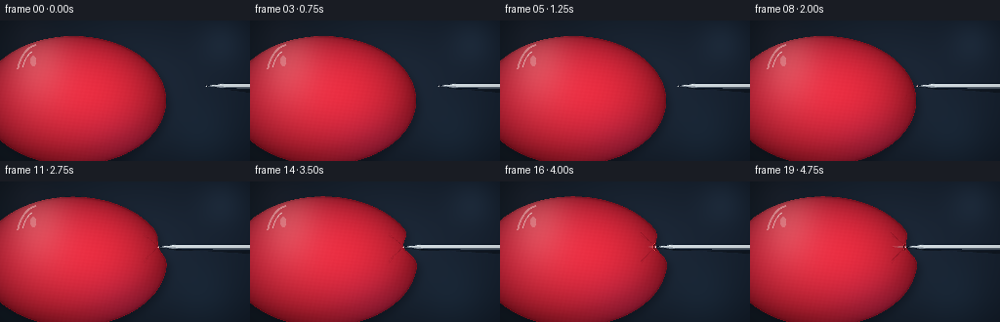
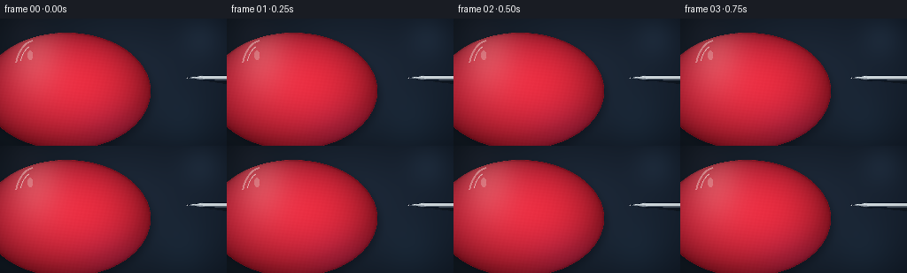
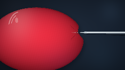

CODING AGENTS AS PIXEL WORLD MODELS
traex/GPT-5.6-Sol · mechanics_0033
点击播放 · 原生 RGB 像素
逐轮保存的候选
回放视频、检查图与代码变化。
每份候选均可单独播放。实际图片检查记录在下方工具轨迹中。
候选 01播放与检查图
点击播放 · 原生 RGB 像素


展开代码变化
--- 上一保存版本
+++ 本次保存版本
@@ -0,0 +1,220 @@
+from pathlib import Path
+import math
+import numpy as np
+import cv2
+from PIL import Image, ImageDraw
+import artifact_io
+
+# Procedural macro shot of a needle slowly dimpling, then puncturing, a rubber balloon.
+W, H, N = 256, 144, 20
+S = 4
+w, h = W*S, H*S
+rng = np.random.default_rng(33)
+
+def smoothstep(x):
+ x = np.clip(x, 0.0, 1.0)
+ return x*x*(3.0-2.0*x)
+
+def composite(base, color, alpha):
+ if alpha.ndim == 2:
+ alpha = alpha[..., None]
+ return base*(1-alpha) + color*alpha
+
+def pil_rgba_layer():
+ return Image.new('RGBA', (w, h), (0,0,0,0))
+
+def blend_pil(arr, im):
+ q = np.asarray(im).astype(np.float32)
+ a = q[...,3:4]/255.0
+ return arr*(1-a) + q[...,:3]*a
+
+# Fixed studio background: dark enough to silhouette the point, with subtle cool bokeh.
+yy, xx = np.mgrid[0:h, 0:w].astype(np.float32)
+X, Y = xx/S, yy/S
+rad = np.sqrt(((X-133)/190)**2 + ((Y-61)/125)**2)
+bg = np.zeros((h,w,3), np.float32)
+bg[...,0] = 15 + 15*(1-rad)
+bg[...,1] = 22 + 19*(1-rad)
+bg[...,2] = 30 + 25*(1-rad)
+bg += (X/W)[...,None] * np.array([2.0,4.0,8.0], np.float32)
+# Soft, out-of-focus studio reflections in the far background.
+for bx,by,br,col,op in [(228,22,17,(78,112,143),.10),(209,119,25,(36,72,94),.10),(29,14,18,(85,54,62),.06)]:
+ d2=((X-bx)**2+(Y-by)**2)/(2*br*br)
+ bg += np.exp(-d2)[...,None]*np.array(col)[None,None,:]*op
+bg = np.clip(bg, 0, 255)
+
+# The approaching needle tip positions, in pixels. It makes contact near frame 8.
+tip_xs = np.array([211,205,199,193,187,182,178,174,171,168,165,162,160,158,157,154,151.5,149,147,145], np.float32)
+needle_y = 67.0
+base_cx, base_cy = 75.0, 82.0
+base_rx, base_ry = 95.0, 66.0
+base_edge = base_cx + base_rx*math.sqrt(max(0,1-((needle_y-base_cy)/base_ry)**2))
+
+frames=[]
+for fi in range(N):
+ arr = bg.copy()
+ tipx = float(tip_xs[fi])
+ # Balloon broadens imperceptibly as pressure builds, conserving the visual volume.
+ pressure = smoothstep((fi-7)/7) if fi < 15 else 1.0
+ rx = base_rx + 1.35*pressure
+ ry = base_ry + 0.65*pressure
+ cx, cy = base_cx-0.35*pressure, base_cy
+ current_base_edge = cx + rx*math.sqrt(max(0,1-((needle_y-cy)/ry)**2))
+ punctured = fi >= 15
+ if fi < 8:
+ dent_depth = 0.0
+ entry_x = current_base_edge
+ elif not punctured:
+ dent_depth = max(0.0, current_base_edge-tipx)
+ entry_x = tipx
+ else:
+ # Once the point breaks through, the stretched skin partly springs back around the shaft.
+ entry_x = 159.3 + 0.35*smoothstep((fi-15)/4)
+ dent_depth = max(0.0, current_base_edge-entry_x)
+
+ # Build a deformed balloon silhouette. The narrow Gaussian notch is the visible dimple.
+ th = np.linspace(0, 2*np.pi, 900, endpoint=False)
+ px = cx + rx*np.cos(th)
+ py = cy + ry*np.sin(th)
+ right = np.cos(th) > 0
+ local = np.exp(-0.5*((py-needle_y)/8.0)**2)
+ shoulders = (np.exp(-0.5*((py-(needle_y-13))/6.5)**2) +
+ np.exp(-0.5*((py-(needle_y+13))/6.5)**2))
+ px[right] += (-dent_depth*local[right] + 0.9*pressure*shoulders[right])
+ poly = np.stack([px*S,py*S],axis=1).round().astype(np.int32)
+ mask = np.zeros((h,w), np.uint8)
+ cv2.fillPoly(mask,[poly],255)
+
+ # Soft cast shadow/hale behind balloon, strongest near its lower-right edge.
+ sh = np.zeros_like(mask)
+ cv2.fillPoly(sh,[poly + np.array([3*S,4*S])],215)
+ sh = cv2.GaussianBlur(sh,(0,0),4.4*S)
+ shadow_alpha=(sh.astype(np.float32)/255.0)*0.37
+ arr = composite(arr, np.array([3,5,10],np.float32), shadow_alpha)
+
+ # Rubber surface shading: rounded volume, deep crimson edge, warm translucent center.
+ nx=(X-cx)/rx; ny=(Y-cy)/ry
+ inside_sphere=np.clip(1-nx*nx-ny*ny,0,1)
+ z=np.sqrt(inside_sphere)
+ light=np.clip(-0.31*nx-0.58*ny+0.78*z,0,1)
+ balloon=np.empty_like(arr)
+ balloon[...,0]=103 + 92*z + 34*light
+ balloon[...,1]=12 + 22*z + 10*light
+ balloon[...,2]=24 + 27*z + 16*light
+ # Subtle warm subsurface glow and cool lower reflection.
+ glow=np.exp(-(((X-103)/70)**2+((Y-78)/55)**2)*1.1)
+ balloon[...,0]+=17*glow
+ balloon[...,1]+=4*glow
+ balloon[...,2]+=2*glow
+ cool=np.exp(-(((X-130)/55)**2+((Y-125)/35)**2))
+ balloon[...,2]+=13*cool
+ balloon[...,1]+=4*cool
+ # Fixed fine rubber texture (does not flicker across frames).
+ texture = (np.sin(X*1.37+Y*.31)+np.sin(Y*1.73-X*.17))*0.75
+ balloon += texture[...,None]
+ a=mask.astype(np.float32)/255.0
+ arr=composite(arr, np.clip(balloon,0,255), a)
+
+ # Richer dark perimeter and a slim transmitted-red rim.
+ dist=cv2.distanceTransform(mask,cv2.DIST_L2,3)/S
+ edge_a=np.clip((2.2-dist)/2.2,0,1)*a
+ arr=composite(arr,np.array([74,5,18],np.float32),edge_a[...,None]*0.42)
+ rim=np.clip((0.9-dist)/0.9,0,1)*a
+ arr=composite(arr,np.array([242,57,65],np.float32),rim[...,None]*0.27)
+
+ # Broad soft highlight and crisp twin specular streaks sell glossy stretched latex.
+ hi=np.exp(-0.5*(((X-38)/23)**2+((Y-43)/31)**2)) * a
+ arr=composite(arr,np.array([255,156,157],np.float32),hi[...,None]*0.36)
+ shine_layer=pil_rgba_layer(); sd=ImageDraw.Draw(shine_layer)
+ sd.arc((16*S,24*S,62*S,99*S),198,265,fill=(255,224,219,120),width=2*S)
+ sd.arc((22*S,30*S,54*S,83*S),200,251,fill=(255,248,242,155),width=1*S)
+ sd.ellipse((31*S,36*S,37*S,47*S),fill=(255,245,237,70))
+ arr=blend_pil(arr,shine_layer)
+
+ # Stretched crease lines around the contact point, only after the rubber begins to dimple.
+ if fi>=8:
+ crease=pil_rgba_layer(); cd=ImageDraw.Draw(crease)
+ ex=entry_x*S; ey=needle_y*S
+ strength=int(22+48*pressure)
+ # Bezier-like tension rays assembled as smooth polylines.
+ for sgn,off in [(-1,0),(1,0),(-1,4),(1,4)]:
+ pts=[]
+ for u in np.linspace(0,1,30):
+ xxp=entry_x-(2+13*u)
+ yyp=needle_y+sgn*(2.4+10*u+2.2*u*u)+(off*(u-.3) if off else 0)
+ pts.append((int(xxp*S),int(yyp*S)))
+ cd.line(pts,fill=(69,3,16,strength if off==0 else strength//2),width=max(1,S//2))
+ arr=blend_pil(arr,crease)
+
+ # A faint contact shadow under the metal.
+ needle_shadow=pil_rgba_layer(); nd=ImageDraw.Draw(needle_shadow)
+ visible_start = tipx if not punctured else entry_x
+ nd.polygon([(int(visible_start*S),int((needle_y+1.1)*S)),
+ (int((visible_start+18)*S),int((needle_y+3.5)*S)),
+ (w,int((needle_y+3.7)*S)),(w,int((needle_y+7.0)*S))],
+ fill=(0,0,0,78))
+ needle_shadow=needle_shadow.filter(Image.Filter.GaussianBlur(1.3*S)) if False else needle_shadow
+ arr=blend_pil(arr,needle_shadow)
+
+ # The point already inside the balloon is visible only as a muted subsurface glint.
+ if punctured:
+ under=pil_rgba_layer(); ud=ImageDraw.Draw(under)
+ ud.polygon([(int(tipx*S),int(needle_y*S)),
+ (int(entry_x*S),int((needle_y-1.35)*S)),
+ (int(entry_x*S),int((needle_y+1.35)*S))],
+ fill=(176,148,151,95))
+ ud.line([(int((tipx+1)*S),int((needle_y-.25)*S)),
+ (int(entry_x*S),int((needle_y-.55)*S))],fill=(255,225,218,68),width=1*S)
+ arr=blend_pil(arr,under)
+
+ # Main steel needle: tapered 18px point leading into a narrow cylindrical shaft.
+ ns = visible_start
+ metal=pil_rgba_layer(); md=ImageDraw.Draw(metal)
+ # Dark underside/shadow edge.
+ md.polygon([(int(ns*S),int(needle_y*S)),
+ (int((ns+18)*S),int((needle_y-2.25)*S)),
+ (w,int((needle_y-2.35)*S)),(w,int((needle_y+2.65)*S)),
+ (int((ns+18)*S),int((needle_y+2.05)*S))],
+ fill=(126,137,148,255))
+ # Main silver face.
+ md.polygon([(int(ns*S),int(needle_y*S)),
+ (int((ns+18)*S),int((needle_y-2.10)*S)),
+ (w,int((needle_y-2.15)*S)),(w,int((needle_y+.55)*S)),
+ (int((ns+18)*S),int((needle_y+.65)*S))],
+ fill=(211,220,225,255))
+ # Bright, continuous steel highlight.
+ md.line([(int((ns+11)*S),int((needle_y-1.15)*S)),(w,int((needle_y-1.3)*S))],
+ fill=(252,254,252,220),width=max(1,S//2))
+ md.line([(int((ns+20)*S),int((needle_y+1.55)*S)),(w,int((needle_y+1.65)*S))],
+ fill=(66,79,91,180),width=max(1,S//2))
+ # A minute white catchlight precisely at the sharp apex.
+ md.ellipse((int((ns-.35)*S),int((needle_y-.35)*S),int((ns+.5)*S),int((needle_y+.5)*S)),
+ fill=(255,255,252,245))
+ arr=blend_pil(arr,metal)
+
+ if punctured:
+ # Tiny stretched puncture lips over the shaft, not an explosive pop.
+ lip=pil_rgba_layer(); ld=ImageDraw.Draw(lip)
+ ex=entry_x*S; ey=needle_y*S
+ ld.arc((int((entry_x-2.3)*S),int((needle_y-4.0)*S),int((entry_x+2.0)*S),int((needle_y+4.0)*S)),
+ 76,284,fill=(49,1,10,225),width=1*S)
+ ld.arc((int((entry_x-2.9)*S),int((needle_y-3.6)*S),int((entry_x+2.2)*S),int((needle_y+3.6)*S)),
+ 86,274,fill=(255,80,84,190),width=max(1,S//2))
+ arr=blend_pil(arr,lip)
+ elif fi>=8:
+ # Pinpoint contact glint before the skin breaks.
+ contact=pil_rgba_layer(); dd=ImageDraw.Draw(contact)
+ r=.75*S
+ dd.ellipse((tipx*S-r,needle_y*S-r,tipx*S+r,needle_y*S+r),fill=(255,159,156,120))
+ arr=blend_pil(arr,contact)
+
+ # A restrained vignette keeps attention on contact mechanics.
+ vign=np.clip(1-0.16*(((X-W/2)/(W*.72))**2+((Y-H/2)/(H*.72))**2),.78,1)
+ arr*=vign[...,None]
+ # Supersampled downscale for clean silhouette and a genuinely sharp needle point.
+ small=cv2.resize(np.clip(arr,0,255).astype(np.uint8),(W,H),interpolation=cv2.INTER_LANCZOS4)
+ frames.append(small)
+
+frames=np.stack(frames).astype(np.uint8)
+artifact_io.save(frames, Path(__file__).resolve().parent)
+print('saved',frames.shape,frames.dtype,'tip range',float(tip_xs[0]),float(tip_xs[-1]),'base edge',base_edge)
可观测工具轨迹
实际执行的命令与返回图片。
命令 1exit 0
/bin/bash -lc "cat prompt.txt && printf '\\n---RULES---\\n' && cat GENERATION_RULES.md && printf '\\n---SPEC---\\n' && cat task_spec.json"
命令 2exit 0
/bin/bash -lc "find . -maxdepth 2 -type f -printf '%p\\n' | sort | head -200"
命令 3exit 0
/bin/bash -lc "which ffmpeg; which blender; python3 - <<'PY'
try:
import cv2; print('cv2',cv2.__version__)
except Exception as e: print('no cv2',e)
try:
from PIL import Image; print('PIL ok')
except Exception as e: print('no PIL',e)
PY"命令 4exit 0
/bin/bash -lc 'cat artifact_io.py'
命令 5exit 0
/bin/bash -lc "cat > generate.py <<'PY'
from pathlib import Path
import math
import numpy as np
import cv2
from PIL import Image, ImageDraw
import artifact_io
# Procedural macro shot of a needle slowly dimpling, then puncturing, a rubber balloon.
W, H, N = 256, 144, 20
S = 4
w, h = W*S, H*S
rng = np.random.default_rng(33)
def smoothstep(x):
x = np.clip(x, 0.0, 1.0)
return x*x*(3.0-2.0*x)
def composite(base, color, alpha):
if alpha.ndim == 2:
alpha = alpha[..., None]
return base*(1-alpha) + color*alpha
def pil_rgba_layer():
return Image.new('RGBA', (w, h), (0,0,0,0))
def blend_pil(arr, im):
q = np.asarray(im).astype(np.float32)
a = q[...,3:4]/255.0
return arr*(1-a) + q[...,:3]*a
# Fixed studio background: dark enough to silhouette the point, with subtle cool bokeh.
yy, xx = np.mgrid[0:h, 0:w].astype(np.float32)
X, Y = xx/S, yy/S
rad = np.sqrt(((X-133)/190)**2 + ((Y-61)/125)**2)
bg = np.zeros((h,w,3), np.float32)
bg[...,0] = 15 + 15*(1-rad)
bg[...,1] = 22 + 19*(1-rad)
bg[...,2] = 30 + 25*(1-rad)
bg += (X/W)[...,None] * np.array([2.0,4.0,8.0], np.float32)
# Soft, out-of-focus studio reflections in the far background.
for bx,by,br,col,op in [(228,22,17,(78,112,143),.10),(209,119,25,(36,72,94),.10),(29,14,18,(85,54,62),.06)]:
d2=((X-bx)**2+(Y-by)**2)/(2*br*br)
bg += np.exp(-d2)[...,None]*np.array(col)[None,None,:]*op
bg = np.clip(bg, 0, 255)
# The approaching needle tip positions, in pixels. It makes contact near frame 8.
tip_xs = np.array([211,205,199,193,187,182,178,174,171,168,165,162,160,158,157,154,151.5,149,147,145], np.float32)
needle_y = 67.0
base_cx, base_cy = 75.0, 82.0
base_rx, base_ry = 95.0, 66.0
base_edge = base_cx + base_rx*math.sqrt(max(0,1-((needle_y-base_cy)/base_ry)**2))
frames=[]
for fi in range(N):
arr = bg.copy()
tipx = float(tip_xs[fi])
# Balloon broadens imperceptibly as pressure builds, conserving the visual volume.
pressure = smoothstep((fi-7)/7) if fi < 15 else 1.0
rx = base_rx + 1.35*pressure
ry = base_ry + 0.65*pressure
cx, cy = base_cx-0.35*pressure, base_cy
current_base_edge = cx + rx*math.sqrt(max(0,1-((needle_y-cy)/ry)**2))
punctured = fi >= 15
if fi < 8:
dent_depth = 0.0
entry_x = current_base_edge
elif not punctured:
dent_depth = max(0.0, current_base_edge-tipx)
entry_x = tipx
else:
# Once the point breaks through, the stretched skin partly springs back around the shaft.
entry_x = 159.3 + 0.35*smoothstep((fi-15)/4)
dent_depth = max(0.0, current_base_edge-entry_x)
# Build a deformed balloon silhouette. The narrow Gaussian notch is the visible dimple.
th = np.linspace(0, 2*np.pi, 900, endpoint=False)
px = cx + rx*np.cos(th)
py = cy + ry*np.sin(th)
right = np.cos(th) > 0
local = np.exp(-0.5*((py-needle_y)/8.0)**2)
shoulders = (np.exp(-0.5*((py-(needle_y-13))/6.5)**2) +
np.exp(-0.5*((py-(needle_y+13))/6.5)**2))
px[right] += (-dent_depth*local[right] + 0.9*pressure*shoulders[right])
poly = np.stack([px*S,py*S],axis=1).round().astype(np.int32)
mask = np.zeros((h,w), np.uint8)
cv2.fillPoly(mask,[poly],255)
# Soft cast shadow/hale behind balloon, strongest near its lower-right edge.
sh = np.zeros_like(mask)
cv2.fillPoly(sh,[poly + np.array([3*S,4*S])],215)
sh = cv2.GaussianBlur(sh,(0,0),4.4*S)
shadow_alpha=(sh.astype(np.float32)/255.0)*0.37
arr = composite(arr, np.array([3,5,10],np.float32), shadow_alpha)
# Rubber surface shading: rounded volume, deep crimson edge, warm translucent center.
nx=(X-cx)/rx; ny=(Y-cy)/ry
inside_sphere=np.clip(1-nx*nx-ny*ny,0,1)
z=np.sqrt(inside_sphere)
light=np.clip(-0.31*nx-0.58*ny+0.78*z,0,1)
balloon=np.empty_like(arr)
balloon[...,0]=103 + 92*z + 34*light
balloon[...,1]=12 + 22*z + 10*light
balloon[...,2]=24 + 27*z + 16*light
# Subtle warm subsurface glow and cool lower reflection.
glow=np.exp(-(((X-103)/70)**2+((Y-78)/55)**2)*1.1)
balloon[...,0]+=17*glow
balloon[...,1]+=4*glow
balloon[...,2]+=2*glow
cool=np.exp(-(((X-130)/55)**2+((Y-125)/35)**2))
balloon[...,2]+=13*cool
balloon[...,1]+=4*cool
# Fixed fine rubber texture (does not flicker across frames).
texture = (np.sin(X*1.37+Y*.31)+np.sin(Y*1.73-X*.17))*0.75
balloon += texture[...,None]
a=mask.astype(np.float32)/255.0
arr=composite(arr, np.clip(balloon,0,255), a)
# Richer dark perimeter and a slim transmitted-red rim.
dist=cv2.distanceTransform(mask,cv2.DIST_L2,3)/S
edge_a=np.clip((2.2-dist)/2.2,0,1)*a
arr=composite(arr,np.array([74,5,18],np.float32),edge_a[...,None]*0.42)
rim=np.clip((0.9-dist)/0.9,0,1)*a
arr=composite(arr,np.array([242,57,65],np.float32),rim[...,None]*0.27)
# Broad soft highlight and crisp twin specular streaks sell glossy stretched latex.
hi=np.exp(-0.5*(((X-38)/23)**2+((Y-43)/31)**2)) * a
arr=composite(arr,np.array([255,156,157],np.float32),hi[...,None]*0.36)
shine_layer=pil_rgba_layer(); sd=ImageDraw.Draw(shine_layer)
sd.arc((16*S,24*S,62*S,99*S),198,265,fill=(255,224,219,120),width=2*S)
sd.arc((22*S,30*S,54*S,83*S),200,251,fill=(255,248,242,155),width=1*S)
sd.ellipse((31*S,36*S,37*S,47*S),fill=(255,245,237,70))
arr=blend_pil(arr,shine_layer)
# Stretched crease lines around the contact point, only after the rubber begins to dimple.
if fi>=8:
crease=pil_rgba_layer(); cd=ImageDraw.Draw(crease)
ex=entry_x*S; ey=needle_y*S
strength=int(22+48*pressure)
# Bezier-like tension rays assembled as smooth polylines.
for sgn,off in [(-1,0),(1,0),(-1,4),(1,4)]:
pts=[]
for u in np.linspace(0,1,30):
xxp=entry_x-(2+13*u)
yyp=needle_y+sgn*(2.4+10*u+2.2*u*u)+(off*(u-.3) if off else 0)
pts.append((int(xxp*S),int(yyp*S)))
cd.line(pts,fill=(69,3,16,strength if off==0 else strength//2),width=max(1,S//2))
arr=blend_pil(arr,crease)
# A faint contact shadow under the metal.
needle_shadow=pil_rgba_layer(); nd=ImageDraw.Draw(needle_shadow)
visible_start = tipx if not punctured else entry_x
nd.polygon([(int(visible_start*S),int((needle_y+1.1)*S)),
(int((visible_start+18)*S),int((needle_y+3.5)*S)),
(w,int((needle_y+3.7)*S)),(w,int((needle_y+7.0)*S))],
fill=(0,0,0,78))
needle_shadow=needle_shadow.filter(Image.Filter.GaussianBlur(1.3*S)) if False else needle_shadow
arr=blend_pil(arr,needle_shadow)
# The point already inside the balloon is visible only as a muted subsurface glint.
if punctured:
under=pil_rgba_layer(); ud=ImageDraw.Draw(under)
ud.polygon([(int(tipx*S),int(needle_y*S)),
(int(entry_x*S),int((needle_y-1.35)*S)),
(int(entry_x*S),int((needle_y+1.35)*S))],
fill=(176,148,151,95))
ud.line([(int((tipx+1)*S),int((needle_y-.25)*S)),
(int(entry_x*S),int((needle_y-.55)*S))],fill=(255,225,218,68),width=1*S)
arr=blend_pil(arr,under)
# Main steel needle: tapered 18px point leading into a narrow cylindrical shaft.
ns = visible_start
metal=pil_rgba_layer(); md=ImageDraw.Draw(metal)
# Dark underside/shadow edge.
md.polygon([(int(ns*S),int(needle_y*S)),
(int((ns+18)*S),int((needle_y-2.25)*S)),
(w,int((needle_y-2.35)*S)),(w,int((needle_y+2.65)*S)),
(int((ns+18)*S),int((needle_y+2.05)*S))],
fill=(126,137,148,255))
# Main silver face.
md.polygon([(int(ns*S),int(needle_y*S)),
(int((ns+18)*S),int((needle_y-2.10)*S)),
(w,int((needle_y-2.15)*S)),(w,int((needle_y+.55)*S)),
(int((ns+18)*S),int((needle_y+.65)*S))],
fill=(211,220,225,255))
# Bright, continuous steel highlight.
md.line([(int((ns+11)*S),int((needle_y-1.15)*S)),(w,int((needle_y-1.3)*S))],
fill=(252,254,252,220),width=max(1,S//2))
md.line([(int((ns+20)*S),int((needle_y+1.55)*S)),(w,int((needle_y+1.65)*S))],
fill=(66,79,91,180),width=max(1,S//2))
# A minute white catchlight precisely at the sharp apex.
md.ellipse((int((ns-.35)*S),int((needle_y-.35)*S),int((ns+.5)*S),int((needle_y+.5)*S)),
fill=(255,255,252,245))
arr=blend_pil(arr,metal)
if punctured:
# Tiny stretched puncture lips over the shaft, not an explosive pop.
lip=pil_rgba_layer(); ld=ImageDraw.Draw(lip)
ex=entry_x*S; ey=needle_y*S
ld.arc((int((entry_x-2.3)*S),int((needle_y-4.0)*S),int((entry_x+2.0)*S),int((needle_y+4.0)*S)),
76,284,fill=(49,1,10,225),width=1*S)
ld.arc((int((entry_x-2.9)*S),int((needle_y-3.6)*S),int((entry_x+2.2)*S),int((needle_y+3.6)*S)),
86,274,fill=(255,80,84,190),width=max(1,S//2))
arr=blend_pil(arr,lip)
elif fi>=8:
# Pinpoint contact glint before the skin breaks.
contact=pil_rgba_layer(); dd=ImageDraw.Draw(contact)
r=.75*S
dd.ellipse((tipx*S-r,needle_y*S-r,tipx*S+r,needle_y*S+r),fill=(255,159,156,120))
arr=blend_pil(arr,contact)
# A restrained vignette keeps attention on contact mechanics.
vign=np.clip(1-0.16*(((X-W/2)/(W*.72))**2+((Y-H/2)/(H*.72))**2),.78,1)
arr*=vign[...,None]
# Supersampled downscale for clean silhouette and a genuinely sharp needle point.
small=cv2.resize(np.clip(arr,0,255).astype(np.uint8),(W,H),interpolation=cv2.INTER_LANCZOS4)
frames.append(small)
frames=np.stack(frames).astype(np.uint8)
artifact_io.save(frames, Path(__file__).resolve().parent)
print('saved',frames.shape,frames.dtype,'tip range',float(tip_xs[0]),float(tip_xs[-1]),'base edge',base_edge)
PY
python3 generate.py"命令 6exit 0
/bin/bash -lc "ls -lh pixels.npz index.html inspection.png frames/00.png frames/19.png && python3 - <<'PY'
import numpy as np
z=np.load('pixels.npz')['pixels']
print(z.shape,z.dtype, len(np.unique(z[:,:,0])), [(i,int(np.count_nonzero(z[:,:,i]"'!=z[:,:,i-1]))) for i in range(1,20)])
PY'视觉工具实际返回图片 1

视觉工具实际返回图片 2
视觉工具实际返回图片 3

保存候选 1 份；完成命令 6 次；可验证图片返回 3 张。原始 API 响应与完整日志保留在本地。